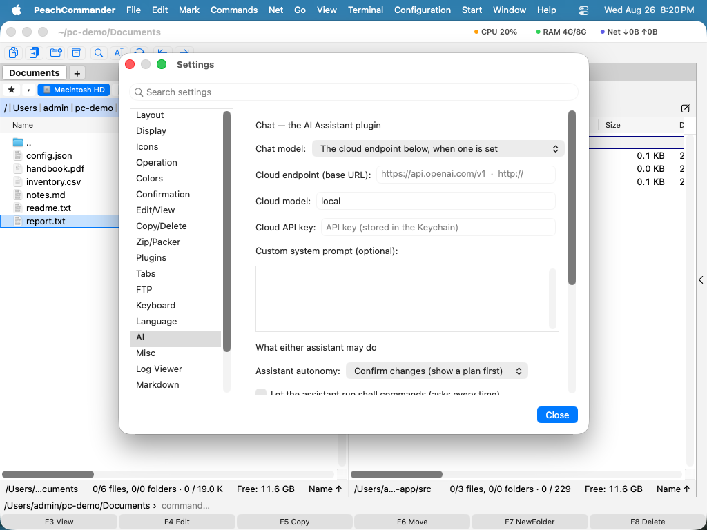

ИИ-ассистент
ИИ-ассистент — это необязательный, удаляемый плагин, который помогает работать с файлами на обычном языке. Он может составить краткое содержание документа или объяснить его, предложить более удачное имя файла, перевести или вычитать текст, превратить данные в таблицу и даже упорядочить папку, а также выполнить файловые операции за вас, предварительно показав план. Он работает на устройстве с помощью Apple Intelligence, когда это доступно, либо вы можете подключить его к облачной модели. Поскольку это плагин, вы можете полностью отключить или удалить его в разделе Конфигурация ▸ Плагины….
Открытие ассистента
Выберите Команды ▸ ИИ-ассистент, чтобы показать ассистента в закреплённой панели справа от окна. Введите запрос и нажмите Return; ассистент может читать файлы, находить нужные сведения и — с вашего подтверждения — вносить изменения.
 (Рис.: ИИ-ассистент, закреплённый справа, работает над запросом.)
(Рис.: ИИ-ассистент, закреплённый справа, работает над запросом.)
Действия по правому щелчку (AI ▸)
Самый быстрый способ использовать ассистента — подменю AI ▸ в контекстном меню:
- На файле — Краткое содержание, Объяснить, Предложить имя, Предложить комментарий, Перевести на английский, Вычитать, Найти задачи и Создать таблицу.
- На фоне панели — Упорядочить эту папку и Найти вероятные дубликаты.
Каждое действие AI ▸ открывает собственный именованный чат (например, Краткое содержание – report.txt), поэтому разные задачи остаются раздельными, а не сваливаются в один длинный разговор. Когда вы сами вводите текст в поле ввода, этот запрос продолжает текущий чат.
Управление чатами
- Используйте переключатель чатов в верхней части панели для перехода между разговорами.
- Меню Удалить ▾ предлагает Удалить этот чат и Удалить все чаты, чтобы можно было очистить всё сразу, когда список становится длинным. Пустые чаты удаляются автоматически при закрытии панели.
Изменения подтверждаются заранее
Для всего, что изменяет файлы, — перемещения, переименования, записи, удаления — ассистент показывает план и ждёт вашего подтверждения перед выполнением. Вы можете изменить это в настройках, повысив уровень самостоятельности ассистента, или понизить его до режима «только чтение», чтобы он никогда ничего не менял.
Настройки
Откройте Конфигурация ▸ Настройки ▸ AI, чтобы настроить ассистента на одной странице:
- Предпочитаемая модель — Автоматически (облако, если настроено, иначе на устройстве), На устройстве (Apple Intelligence) или Облако.
- Облачная конечная точка, модель и ключ API — для использования модели, совместимой с OpenAI, вместо модели на устройстве. Ключ хранится в связке ключей macOS, а не в файлах конфигурации.
- Самостоятельность ассистента — только чтение, подтверждение изменений (по умолчанию) или автономный режим.
- Пользовательский системный запрос — необязательные инструкции, определяющие, как ассистент отвечает.
- Сервер MCP — необязательный локальный сервер, позволяющий внешнему агенту управлять приложением; отключён по умолчанию и защищается токеном.

(Рис.: Все параметры ассистента находятся на одной странице AI в настройках.)Конфиденциальность
- С Apple Intelligence ассистент работает на вашем Mac; ничего не покидает устройство.
- Облачная модель используется, только если вы её настроите, а её ключ API хранится в связке ключей.
- Действия, изменяющие файлы, подтверждаются перед выполнением, если только вы намеренно не повысите уровень самостоятельности.